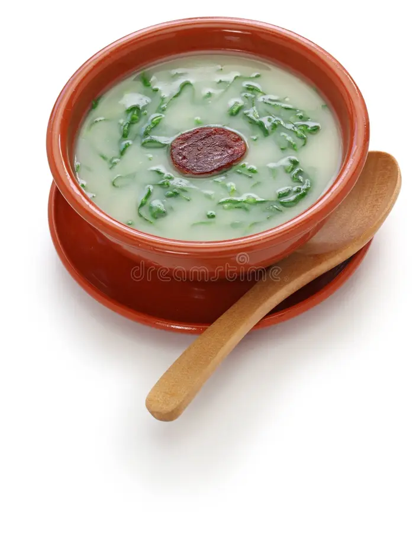

Receita do Livro do Pantagruel
Fazem-se as folhas da couve num rolo, apertam-se na mão esquerda e cortam-se em fios o mais finos possível, utilizando uma faca bem afiada. Lavam-se em várias águas frias, esfregando-as com as mãos, até à última água não ficar esverdeada. Descascam-se as batatas e cozem-se em água, temperada com sal, em quantidade suficiente para obter o caldo. Passa-se pelo espremedor, junta-se uma colherada de azeite, deixa-se ferver para o cozer, e à hora de servir, deita-se a couve. Coze-se em lume forte, com a panela destapada para a a couve ficar verde, retirando do lume pouco depois de levantar a fervura. Em muitas regiões, temperam o calde verde, à saída do lume, com um pouco de azeite cru e, no Norte, além disso, servem-no em tigelas, pondo, em cada, um rodelinha de chouriço. Também há quem goste de acompanhá-lo com broa de milho ou pão de centeio.